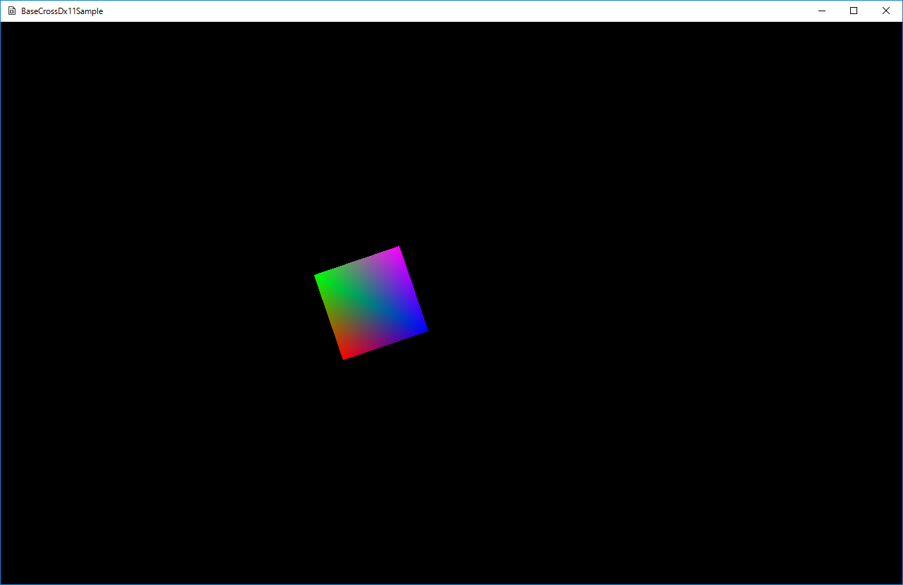

図0003a
//メッシュの作成
m_SquareMesh = MeshResource::CreateMeshResource(vertices, indices, false);
void SquareSprite::OnUpdate() {
if (m_PosSpan.x > 0) {
m_Rot -= 0.05f;
}
else {
m_Rot += 0.05f;
}
m_Pos += m_PosSpan;
if (abs(m_Pos.x) > 400.0f) {
m_PosSpan *= -1.0f;
}
}
void SquareSprite::OnDraw() {
//中略
//行列の定義
Mat4x4 World, Proj;
//ワールド行列の決定
World.affineTransformation2D(
m_Scale, //スケーリング
Vec2(0, 0), //回転の中心（重心）
m_Rot, //回転角度
m_Pos //位置
);
//射影行列の決定
float w = static_cast<float>(App::GetApp()->GetGameWidth());
float h = static_cast<float>(App::GetApp()->GetGameHeight());
Proj = XMMatrixOrthographicLH(w, h, -1.0, 1.0f);
//行列の合成
World *= Proj;
//コンスタントバッファの準備
SpriteConstantBuffer sb;
//エミッシブ加算は行わない。
sb.Emissive = Col4(0, 0, 0, 0);
//行列の設定
sb.World = World;
//コンスタントバッファの更新
pD3D11DeviceContext->UpdateSubresource(CBSprite::GetPtr()->GetBuffer(), 0, nullptr, &sb, 0, 0);
//ストライドとオフセット
UINT stride = sizeof(VertexPositionColor);
UINT offset = 0;
//頂点バッファのセット
pD3D11DeviceContext->IASetVertexBuffers(0, 1,
m_SquareMesh->GetVertexBuffer().GetAddressOf(), &stride, &offset);
//インデックスバッファのセット
pD3D11DeviceContext->IASetIndexBuffer(m_SquareMesh->GetIndexBuffer().Get(),
DXGI_FORMAT_R16_UINT, 0);
//描画方法（3角形）
pD3D11DeviceContext->IASetPrimitiveTopology(D3D11_PRIMITIVE_TOPOLOGY_TRIANGLELIST);
//コンスタントバッファの設定
ID3D11Buffer* pConstantBuffer = CBSprite::GetPtr()->GetBuffer();
ID3D11Buffer* pNullConstantBuffer = nullptr;
//頂点シェーダに渡す
pD3D11DeviceContext->VSSetConstantBuffers(0, 1, &pConstantBuffer);
//ピクセルシェーダに渡す
pD3D11DeviceContext->PSSetConstantBuffers(0, 1, &pConstantBuffer);
//シェーダの設定
pD3D11DeviceContext->VSSetShader(VSPCSprite::GetPtr()->GetShader(), nullptr, 0);
pD3D11DeviceContext->PSSetShader(PSPCSprite::GetPtr()->GetShader(), nullptr, 0);
//インプットレイアウトの設定
pD3D11DeviceContext->IASetInputLayout(VSPCSprite::GetPtr()->GetInputLayout());
//ブレンドステート
pD3D11DeviceContext->OMSetBlendState(RenderState->GetOpaque(), nullptr, 0xffffffff);
//デプスステンシルステート
pD3D11DeviceContext->OMSetDepthStencilState(RenderState->GetDepthNone(), 0);
//ラスタライザステート
pD3D11DeviceContext->RSSetState(RenderState->GetCullBack());
//描画
pD3D11DeviceContext->DrawIndexed(m_SquareMesh->GetNumIndicis(), 0, 0);
//後始末
Dev->InitializeStates();
}